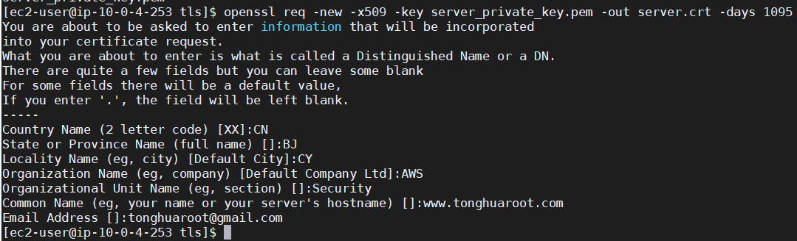
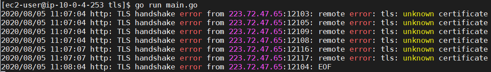
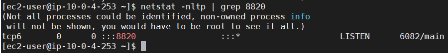

Write a simple HTTPS server use Go
0x00 前言
为了研究HTTPS的通信原理，随决定实现一个简易的 HTTPS 服务器，用最精简的代码可以专注于针对某一个 HTTPS 请求的研究。话不多说，直接生成自签名证书，上 Golang 代码梭哈。
0x01 生成自签名证书
用于测试的工作目录：1
/home/ec2-user/test/tls
可以使用如下命令生成自签名证书：
使用该命令生成 private key1
openssl genrsa -out server_private_key.pem 2048
使用该命令可以生成一个 certificate1
openssl req -new -x509 -key server_private_key.pem -out server.crt -days 1095

0x02 服务端代码
如下代码用于实现 HTTPS 服务端
使用如下命令可以对 Golang 的代码进行格式化1
go fmt main.go
示例代码1
2
3
4
5
6
7
8
9
10
11
12
13
14
15
16
17
18
19package main
import (
"fmt"
"log"
"net/http"
)
func test(w http.ResponseWriter, r *http.Request) {
fmt.Fprintf(w, "tonghuaroot")
}
func main() {
http.HandleFunc("/1.txt", test)
err := http.ListenAndServeTLS(":8820", "server.crt", "server_private_key.pem", nil)
if err != nil {
log.Fatal("ListenerAndServe:", err)
}
}
使用如下命令可以运行 HTTPS 服务器1
go run main.go


0x03 使用 Wireshark 进行 HTTPS 请求报文捕获并分析
1 | tcp.port == 8820 |
0x04 后记
写这篇文章主要是搭建一个建议的HTTPS Server端，方便配合 Wireshark 分析 HTTPS 的通信流程。